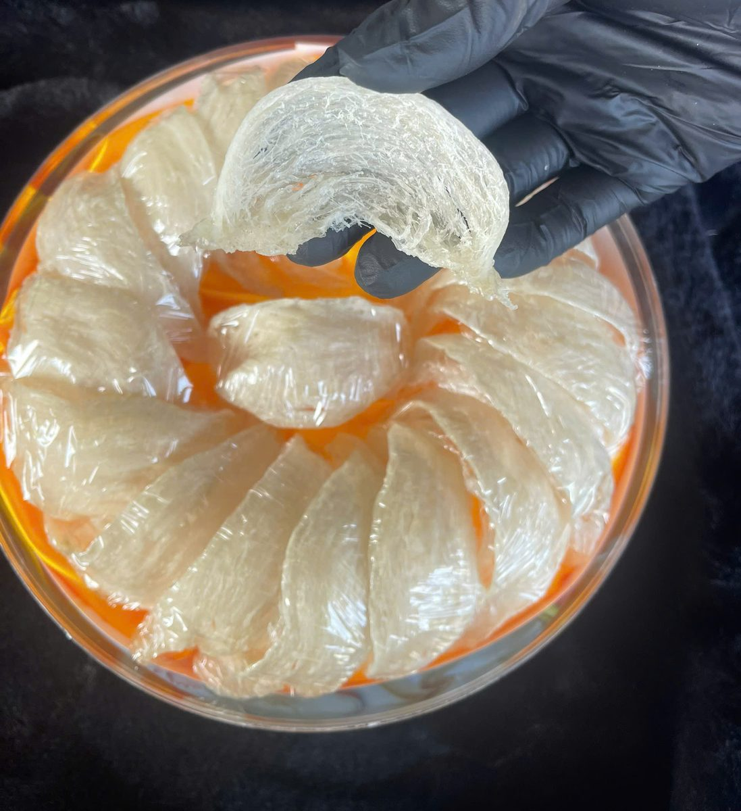
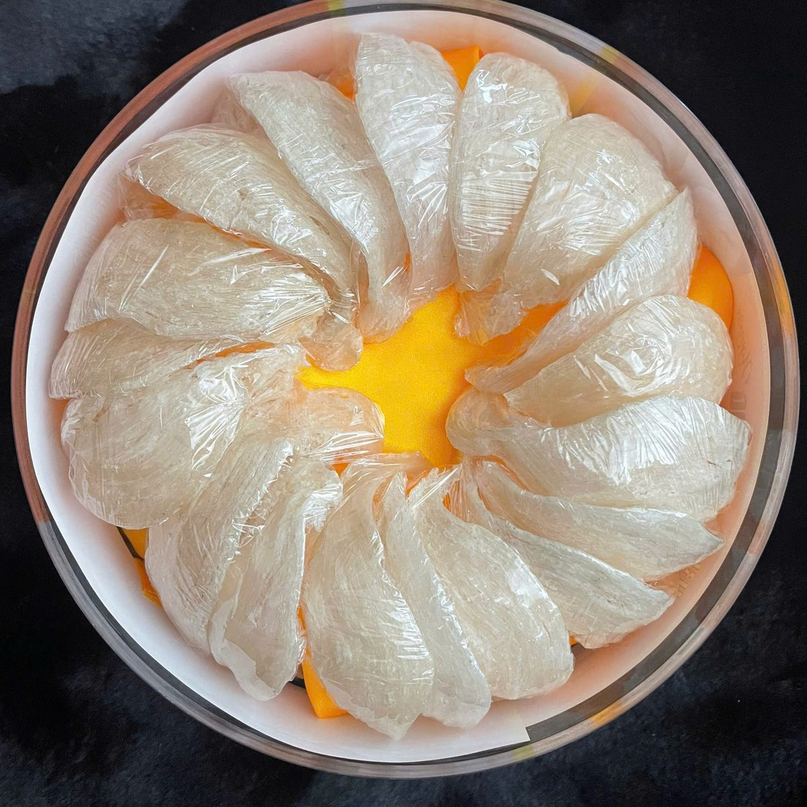

Trong Tổ Yến Có Gì? Đọc Phiếu Kiểm Nghiệm Đạm Và Acid Amin Của Yến Tinh Chế
Yến Sào Lanest · Đăng ngày 19/11/2026

Hỏi "trong tổ yến có gì", nhiều nơi sẽ trả lời bằng một câu rất quen: giàu đạm, nhiều acid amin, hàng chục khoáng chất. Câu đó không sai, nhưng nó không cho anh chị biết một hộp yến cụ thể đang cầm trên tay chứa bao nhiêu. Bài này làm ngược lại: mở phiếu kiểm nghiệm thật của mẫu Yến Sào Tinh Chế Lanest, đọc từng con số, và nói rõ con số nào nói được điều gì, điều gì thì chưa.
Một tổ yến tinh chế nhấc ra khỏi hộp, sợi yến mảnh và trong
1. Vì sao Lanest trả lời bằng phiếu kiểm nghiệm
Người làm yến nói "yến bổ lắm" thì ai cũng nói được. Con số trên một tờ phiếu do phòng thử nghiệm độc lập ký thì khác. Người sáng lập Lanest từng giải thích với đội ngũ vì sao Lanest trụ được khi nhiều nhãn yến quanh vùng phải ngưng: "hàng tháng đều tự gửi mẫu đi kiểm nghiệm thật."
Hai phiếu dùng trong bài đều do AVATEK (Trung tâm Kiểm nghiệm và Tư vấn UDKH AVATEK) thực hiện trên mẫu Yến Sào Tinh Chế Lanest, tức yến khô đã làm sạch:
- Phiếu chỉ tiêu đạm và an toàn: mẫu nhận ngày 25/01/2024.
- Phiếu acid amin: mẫu nhận ngày 28/02/2024, trả kết quả ngày 04/03/2024.
Phiếu ghi rõ một dòng mà Lanest muốn anh chị nhớ: kết quả chỉ có giá trị trên mẫu đã gửi. Lô khác, loại yến khác có thể ra số khác. Đó là lý do việc kiểm nghiệm phải làm đều, không phải làm một lần rồi treo mãi.
2. Đạm: 62,7% trên mẫu yến khô
Chỉ tiêu đáng chú ý nhất là đạm (protein) 62,7%. Nói nôm na, trong 100g mẫu yến tinh chế khô đó có khoảng 62,7g là đạm. Phần lớn khối lượng tổ yến là đạm, nên người ta gọi yến là thực phẩm giàu đạm.
Trên các bài viết phổ thông về yến, kể cả bài tổng quan về yến sào của Lanest, con số hay gặp là 45–55% protein. Mẫu của Lanest ra cao hơn mức đó, nhưng Lanest không lấy 62,7% làm con số chung cho mọi lô, mọi loại yến. Đây là kết quả của một mẫu cụ thể, đọc đúng như vậy là đủ.
3. Acid amin: 16 loại đo được, tổng 48,1%
Đạm được tạo nên từ các acid amin. Phiếu acid amin của AVATEK đo 16 loại trên mẫu Yến Sào Tinh Chế Lanest, cộng lại tổng acid amin 48,1%:
| Acid amin | Kết quả (%) | Acid amin | Kết quả (%) |
| Aspartic acid | 5,47 | Phenylalanine | 3,52 |
| Serine | 4,15 | Threonine | 3,32 |
| Proline | 3,88 | Tyrosine | 2,79 |
| Leucine | 3,82 | Lysine (dạng hydrochloride) | 2,53 |
| Glutamic acid | 3,71 | Glycine | 2,02 |
| Valine | 3,69 | Histidine (dạng monohydrochloride) | 1,96 |
| Arginine | 3,68 | Isoleucine | 1,65 |
| Alanine | 1,52 | Methionine | 0,381 |
| Tổng acid amin | 48,1 | ||
Ba loại nhiều nhất trong mẫu là aspartic acid, serine và proline. Lanest dừng ở việc công khai con số, không gán cho từng acid amin một công dụng riêng, vì Lanest chưa có nghiên cứu nào trên sản phẩm của mình để nói điều đó.
4. Còn câu "18 acid amin, 31 nguyên tố vi lượng" thì sao?
Anh chị sẽ gặp câu này ở rất nhiều nơi, và chính các bài viết cũ trên web Lanest cũng từng dùng: trong 100g yến có 18 loại acid amin, 31 nguyên tố vi lượng như canxi, sắt, kẽm. Đó là con số tổng hợp từ tài liệu chung về yến sào.
Nói cho công bằng với người mua: phiếu kiểm nghiệm của Lanest hiện có 16 chỉ tiêu acid amin, và Lanest chưa có phiếu đo khoáng chất trên mẫu của mình. Vì vậy trong bài này Lanest chỉ nói những gì phiếu đo được. Khi nơi bán đưa ra con số rất cụ thể, anh chị có quyền hỏi: số đó đo trên mẫu nào, phòng thử nghiệm nào, năm nào.

Hộp tổ yến tinh chế xếp hình hoa, từng tổ đã được đội thợ làm sạch lông bằng tay
5. Chỉ tiêu an toàn: những gì "không phát hiện"
Ngoài dinh dưỡng, phiếu ngày 25/01/2024 còn kiểm những thứ người mua yến hay lo:
- Salmonella: không phát hiện trong 25g mẫu.
- Kim loại nặng (antimon, arsen, cadimi, chì, thủy ngân): không phát hiện.
- Nitrit, SO2, hydro peroxit: không phát hiện.
Những con số này đi cùng các bước Lanest tự giữ ở khâu làm hàng: đội thợ riêng làm sạch bằng tay, 4 chốt kiểm trước khi đóng hộp, không tẩy trắng. Muốn xem các chốt đó, anh chị đọc bài bên trong xưởng yến Lanest.
6. Con số trên yến khô khác con số trên hũ yến chưng
Phiếu ở trên đo trên yến khô. Một hũ yến chưng sẵn thì khác hẳn: yến đã ngâm nở, chưng cùng nước, đường và nguyên liệu theo vị. Vì vậy thông số dinh dưỡng của hũ yến tính trên 100g sản phẩm đã chưng, không thể đặt cạnh con số 62,7% của yến khô mà so.
Mỗi vị yến hũ 7g của Lanest có phiếu kết quả thử nghiệm riêng, ghi trong hồ sơ tự công bố. Hiểu đúng "yến tươi" và "tổ yến khô" trên nhãn, anh chị xem bài cách đọc nhãn yến hũ và yến hũ nguyên chất và yến hũ 7g khác nhau thế nào.
Cuối cùng, giàu đạm không có nghĩa là chữa được bệnh. Sản phẩm này không phải là thuốc và không có tác dụng thay thế thuốc chữa bệnh. Người đang điều trị bệnh nên hỏi bác sĩ trước khi dùng yến thường xuyên. Chuyện yến với cân nặng và làn da, Lanest đã viết riêng ở bài yến sào có giúp giảm cân, đẹp da không.
Câu hỏi thường gặp
Tổ yến có bao nhiêu protein?
Mẫu Yến Sào Tinh Chế Lanest kiểm nghiệm tại AVATEK (mẫu nhận 25/01/2024) có đạm 62,7%. Tài liệu chung về yến thường ghi 45–55%. Con số thay đổi theo mẫu, nên hãy hỏi phiếu của đúng sản phẩm mình mua.
Yến sào có bao nhiêu loại acid amin?
Phiếu của Lanest đo 16 loại acid amin, tổng 48,1% trên mẫu yến tinh chế khô. Con số "18 loại" hay gặp là số tổng hợp từ tài liệu chung, không phải từ phiếu của Lanest.
Muốn xem phiếu kiểm nghiệm gốc thì làm sao?
Anh chị gọi 0258 6278 627, nói rõ sản phẩm đang quan tâm để được gửi đúng phiếu của sản phẩm đó.